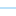

<!doctype html>
<html lang="en">
    <head>
        <meta charset="utf-8">
        <meta http-equiv="X-UA-Compatible" content="IE=edge">
        <meta name="viewport" content="initial-scale=1,user-scalable=no,maximum-scale=1,width=device-width">
        <meta name="mobile-web-app-capable" content="yes">
        <meta name="apple-mobile-web-app-capable" content="yes">
        <link rel="stylesheet" href="css/leaflet.css"><link rel="stylesheet" href="css/L.Control.Locate.min.css">
        <link rel="stylesheet" href="css/qgis2web.css"><link rel="stylesheet" href="css/fontawesome-all.min.css">
        <link rel="stylesheet" href="css/leaflet-search.css">
        <link rel="stylesheet" href="css/leaflet-measure.css">
        <style>
        html, body, #map {
            width: 100%;
            height: 100%;
            padding: 0;
            margin: 0;
        }
        </style>
        <title></title>
    </head>
    <body>
        <div id="map">
        </div>
        <script src="js/qgis2web_expressions.js"></script>
        <script src="js/leaflet.js"></script><script src="js/L.Control.Locate.min.js"></script>
        <script src="js/leaflet.rotatedMarker.js"></script>
        <script src="js/leaflet.pattern.js"></script>
        <script src="js/leaflet-hash.js"></script>
        <script src="js/Autolinker.min.js"></script>
        <script src="js/rbush.min.js"></script>
        <script src="js/labelgun.min.js"></script>
        <script src="js/labels.js"></script>
        <script src="js/leaflet-measure.js"></script>
        <script src="js/leaflet-search.js"></script>
        <script src="data/RUBBER_KK_1.js"></script>
        <script src="data/SOIL_DES_POINT_KK_2.js"></script>
        <script src="data/HYDROL_KK_3.js"></script>
        <script src="data/HYDROP_KK_4.js"></script>
        <script src="data/ROADEDGE_KK_5.js"></script>
        <script>
        var highlightLayer;
        function highlightFeature(e) {
            highlightLayer = e.target;

            if (e.target.feature.geometry.type === 'LineString') {
              highlightLayer.setStyle({
                color: '#ffff00',
              });
            } else {
              highlightLayer.setStyle({
                fillColor: '#ffff00',
                fillOpacity: 1
              });
            }
        }
        var map = L.map('map', {
            zoomControl:true, maxZoom:22, minZoom:1
        }).fitBounds([[6.415285455873594,101.71435023012779],[6.497382447588334,101.87304697796345]]);
        var hash = new L.Hash(map);
        map.attributionControl.setPrefix('<a href="https://github.com/tomchadwin/qgis2web" target="_blank">qgis2web</a> &middot; <a href="https://leafletjs.com" title="A JS library for interactive maps">Leaflet</a> &middot; <a href="https://qgis.org">QGIS</a>');
        var autolinker = new Autolinker({truncate: {length: 30, location: 'smart'}});
        L.control.locate({locateOptions: {maxZoom: 19}}).addTo(map);
        var measureControl = new L.Control.Measure({
            position: 'topleft',
            primaryLengthUnit: 'meters',
            secondaryLengthUnit: 'kilometers',
            primaryAreaUnit: 'sqmeters',
            secondaryAreaUnit: 'hectares'
        });
        measureControl.addTo(map);
        document.getElementsByClassName('leaflet-control-measure-toggle')[0]
        .innerHTML = '';
        document.getElementsByClassName('leaflet-control-measure-toggle')[0]
        .className += ' fas fa-ruler';
        var bounds_group = new L.featureGroup([]);
        function setBounds() {
        }
        map.createPane('pane_GoogleSatellite_0');
        map.getPane('pane_GoogleSatellite_0').style.zIndex = 400;
        var layer_GoogleSatellite_0 = L.tileLayer('https://mt1.google.com/vt/lyrs=s&x={x}&y={y}&z={z}', {
            pane: 'pane_GoogleSatellite_0',
            opacity: 1.0,
            attribution: '',
            minZoom: 1,
            maxZoom: 22,
        });
        layer_GoogleSatellite_0;
        map.addLayer(layer_GoogleSatellite_0);
        function pop_RUBBER_KK_1(feature, layer) {
            layer.on({
                mouseout: function(e) {
                    for (i in e.target._eventParents) {
                        e.target._eventParents[i].resetStyle(e.target);
                    }
                },
                mouseover: highlightFeature,
            });
            var popupContent = '<table>\
                    <tr>\
                        <th scope="row">FSC_ID</th>\
                        <td>' + (feature.properties['FSC_ID'] !== null ? autolinker.link(feature.properties['FSC_ID'].toLocaleString()) : '') + '</td>\
                    </tr>\
                    <tr>\
                        <th scope="row">X</th>\
                        <td>' + (feature.properties['X'] !== null ? autolinker.link(feature.properties['X'].toLocaleString()) : '') + '</td>\
                    </tr>\
                    <tr>\
                        <th scope="row">Y</th>\
                        <td>' + (feature.properties['Y'] !== null ? autolinker.link(feature.properties['Y'].toLocaleString()) : '') + '</td>\
                    </tr>\
                    <tr>\
                        <th scope="row">LATITUDE</th>\
                        <td>' + (feature.properties['LATITUDE'] !== null ? autolinker.link(feature.properties['LATITUDE'].toLocaleString()) : '') + '</td>\
                    </tr>\
                    <tr>\
                        <th scope="row">LONGITUDE</th>\
                        <td>' + (feature.properties['LONGITUDE'] !== null ? autolinker.link(feature.properties['LONGITUDE'].toLocaleString()) : '') + '</td>\
                    </tr>\
                    <tr>\
                        <th scope="row">เลขที่ดิน</th>\
                        <td>' + (feature.properties['เลขที่ดิน'] !== null ? autolinker.link(feature.properties['เลขที่ดิน'].toLocaleString()) : '') + '</td>\
                    </tr>\
                    <tr>\
                        <th scope="row">ชื่อสมาชิก</th>\
                        <td>' + (feature.properties['ชื่อสมาชิก'] !== null ? autolinker.link(feature.properties['ชื่อสมาชิก'].toLocaleString()) : '') + '</td>\
                    </tr>\
                    <tr>\
                        <th scope="row">ผลผลิต</th>\
                        <td>' + (feature.properties['ผลผลิต'] !== null ? autolinker.link(feature.properties['ผลผลิต'].toLocaleString()) : '') + '</td>\
                    </tr>\
                    <tr>\
                        <th scope="row">เนื้อที่(ไร่)</th>\
                        <td>' + (feature.properties['เนื้อที่(ไร่)'] !== null ? autolinker.link(feature.properties['เนื้อที่(ไร่)'].toLocaleString()) : '') + '</td>\
                    </tr>\
                    <tr>\
                        <th scope="row">พันธุ์ยาง</th>\
                        <td>' + (feature.properties['พันธุ์ยาง'] !== null ? autolinker.link(feature.properties['พันธุ์ยาง'].toLocaleString()) : '') + '</td>\
                    </tr>\
                    <tr>\
                        <th scope="row">ระยะปลูก</th>\
                        <td>' + (feature.properties['ระยะปลูก'] !== null ? autolinker.link(feature.properties['ระยะปลูก'].toLocaleString()) : '') + '</td>\
                    </tr>\
                    <tr>\
                        <th scope="row">ชื่อผู้กรีด</th>\
                        <td>' + (feature.properties['ชื่อผู้กรีด'] !== null ? autolinker.link(feature.properties['ชื่อผู้กรีด'].toLocaleString()) : '') + '</td>\
                    </tr>\
                    <tr>\
                        <th scope="row">รูปแบบการกรีด</th>\
                        <td>' + (feature.properties['รูปแบบการกรีด'] !== null ? autolinker.link(feature.properties['รูปแบบการกรีด'].toLocaleString()) : '') + '</td>\
                    </tr>\
                    <tr>\
                        <th scope="row">ความลาดชัน</th>\
                        <td>' + (feature.properties['ความลาดชัน'] !== null ? autolinker.link(feature.properties['ความลาดชัน'].toLocaleString()) : '') + '</td>\
                    </tr>\
                </table>';
            layer.bindPopup(popupContent, {maxHeight: 400});
        }

        function style_RUBBER_KK_1_0() {
            return {
                pane: 'pane_RUBBER_KK_1',
                opacity: 1,
                color: 'rgba(35,35,35,1.0)',
                dashArray: '',
                lineCap: 'butt',
                lineJoin: 'miter',
                weight: 1.0, 
                fill: true,
                fillOpacity: 1,
                fillColor: 'rgba(15,199,79,0.5019607843137255)',
                interactive: true,
            }
        }
        map.createPane('pane_RUBBER_KK_1');
        map.getPane('pane_RUBBER_KK_1').style.zIndex = 401;
        map.getPane('pane_RUBBER_KK_1').style['mix-blend-mode'] = 'normal';
        var layer_RUBBER_KK_1 = new L.geoJson(json_RUBBER_KK_1, {
            attribution: '',
            interactive: true,
            dataVar: 'json_RUBBER_KK_1',
            layerName: 'layer_RUBBER_KK_1',
            pane: 'pane_RUBBER_KK_1',
            onEachFeature: pop_RUBBER_KK_1,
            style: style_RUBBER_KK_1_0,
        });
        bounds_group.addLayer(layer_RUBBER_KK_1);
        map.addLayer(layer_RUBBER_KK_1);
        function pop_SOIL_DES_POINT_KK_2(feature, layer) {
            layer.on({
                mouseout: function(e) {
                    for (i in e.target._eventParents) {
                        e.target._eventParents[i].resetStyle(e.target);
                    }
                },
                mouseover: highlightFeature,
            });
            var popupContent = '<table>\
                    <tr>\
                        <td colspan="2">' + (feature.properties['FID_prov_2'] !== null ? autolinker.link(feature.properties['FID_prov_2'].toLocaleString()) : '') + '</td>\
                    </tr>\
                    <tr>\
                        <th scope="row">SOILGROUP</th>\
                        <td>' + (feature.properties['SOILGROUP'] !== null ? autolinker.link(feature.properties['SOILGROUP'].toLocaleString()) : '') + '</td>\
                    </tr>\
                    <tr>\
                        <th scope="row">ชุดดิน</th>\
                        <td>' + (feature.properties['ชุดดิน'] !== null ? autolinker.link(feature.properties['ชุดดิน'].toLocaleString()) : '') + '</td>\
                    </tr>\
                    <tr>\
                        <th scope="row">ชุดดินที่พบ</th>\
                        <td>' + (feature.properties['ชุดดินที่พบ'] !== null ? autolinker.link(feature.properties['ชุดดินที่พบ'].toLocaleString()) : '') + '</td>\
                    </tr>\
                    <tr>\
                        <th scope="row">คุณสมบัติของดิน</th>\
                        <td>' + (feature.properties['คุณสมบัติของดิน'] !== null ? autolinker.link(feature.properties['คุณสมบัติของดิน'].toLocaleString()) : '') + '</td>\
                    </tr>\
                    <tr>\
                        <th scope="row">ความอุดมสมบูรณ์</th>\
                        <td>' + (feature.properties['ความอุดมสมบูรณ์'] !== null ? autolinker.link(feature.properties['ความอุดมสมบูรณ์'].toLocaleString()) : '') + '</td>\
                    </tr>\
                    <tr>\
                        <th scope="row">ปัญหาของดิน</th>\
                        <td>' + (feature.properties['ปัญหาของดิน'] !== null ? autolinker.link(feature.properties['ปัญหาของดิน'].toLocaleString()) : '') + '</td>\
                    </tr>\
                    <tr>\
                        <th scope="row">ความเหมาะสมในการถมดิน</th>\
                        <td>' + (feature.properties['ความเหมาะสมในการถมดิน'] !== null ? autolinker.link(feature.properties['ความเหมาะสมในการถมดิน'].toLocaleString()) : '') + '</td>\
                    </tr>\
                    <tr>\
                        <th scope="row">ความเหมาะสมในการขุดบ่อ</th>\
                        <td>' + (feature.properties['ความเหมาะสมในการขุดบ่อ'] !== null ? autolinker.link(feature.properties['ความเหมาะสมในการขุดบ่อ'].toLocaleString()) : '') + '</td>\
                    </tr>\
                    <tr>\
                        <th scope="row">LDD_Soilgrop_URL</th>\
                        <td>' + (feature.properties['LDD_Soilgrop_URL'] !== null ? autolinker.link(feature.properties['LDD_Soilgrop_URL'].toLocaleString()) : '') + '</td>\
                    </tr>\
                    <tr>\
                        <th scope="row">การปลูกไม้ผลไม้ยืนต้น</th>\
                        <td>' + (feature.properties['การปลูกไม้ผลไม้ยืนต้น'] !== null ? autolinker.link(feature.properties['การปลูกไม้ผลไม้ยืนต้น'].toLocaleString()) : '') + '</td>\
                    </tr>\
                </table>';
            layer.bindPopup(popupContent, {maxHeight: 400});
        }

        function style_SOIL_DES_POINT_KK_2_0() {
            return {
                pane: 'pane_SOIL_DES_POINT_KK_2',
                radius: 4.0,
                opacity: 1,
                color: 'rgba(179,92,21,1.0)',
                dashArray: '',
                lineCap: 'butt',
                lineJoin: 'miter',
                weight: 2.0,
                fill: true,
                fillOpacity: 1,
                fillColor: 'rgba(247,128,30,1.0)',
                interactive: true,
            }
        }
        map.createPane('pane_SOIL_DES_POINT_KK_2');
        map.getPane('pane_SOIL_DES_POINT_KK_2').style.zIndex = 402;
        map.getPane('pane_SOIL_DES_POINT_KK_2').style['mix-blend-mode'] = 'normal';
        var layer_SOIL_DES_POINT_KK_2 = new L.geoJson(json_SOIL_DES_POINT_KK_2, {
            attribution: '',
            interactive: true,
            dataVar: 'json_SOIL_DES_POINT_KK_2',
            layerName: 'layer_SOIL_DES_POINT_KK_2',
            pane: 'pane_SOIL_DES_POINT_KK_2',
            onEachFeature: pop_SOIL_DES_POINT_KK_2,
            pointToLayer: function (feature, latlng) {
                var context = {
                    feature: feature,
                    variables: {}
                };
                return L.circleMarker(latlng, style_SOIL_DES_POINT_KK_2_0(feature));
            },
        });
        bounds_group.addLayer(layer_SOIL_DES_POINT_KK_2);
        map.addLayer(layer_SOIL_DES_POINT_KK_2);
        function pop_HYDROL_KK_3(feature, layer) {
            layer.on({
                mouseout: function(e) {
                    for (i in e.target._eventParents) {
                        e.target._eventParents[i].resetStyle(e.target);
                    }
                },
                mouseover: highlightFeature,
            });
            var popupContent = '<table>\
                    <tr>\
                        <td colspan="2">' + (feature.properties['ID'] !== null ? autolinker.link(feature.properties['ID'].toLocaleString()) : '') + '</td>\
                    </tr>\
                    <tr>\
                        <td colspan="2">' + (feature.properties['HY_USE'] !== null ? autolinker.link(feature.properties['HY_USE'].toLocaleString()) : '') + '</td>\
                    </tr>\
                    <tr>\
                        <td colspan="2">' + (feature.properties['HY_LNAME'] !== null ? autolinker.link(feature.properties['HY_LNAME'].toLocaleString()) : '') + '</td>\
                    </tr>\
                </table>';
            layer.bindPopup(popupContent, {maxHeight: 400});
        }

        function style_HYDROL_KK_3_0() {
            return {
                pane: 'pane_HYDROL_KK_3',
                opacity: 1,
                color: 'rgba(67,174,239,0.7529411764705882)',
                dashArray: '',
                lineCap: 'square',
                lineJoin: 'bevel',
                weight: 1.0,
                fillOpacity: 0,
                interactive: true,
            }
        }
        map.createPane('pane_HYDROL_KK_3');
        map.getPane('pane_HYDROL_KK_3').style.zIndex = 403;
        map.getPane('pane_HYDROL_KK_3').style['mix-blend-mode'] = 'normal';
        var layer_HYDROL_KK_3 = new L.geoJson(json_HYDROL_KK_3, {
            attribution: '',
            interactive: true,
            dataVar: 'json_HYDROL_KK_3',
            layerName: 'layer_HYDROL_KK_3',
            pane: 'pane_HYDROL_KK_3',
            onEachFeature: pop_HYDROL_KK_3,
            style: style_HYDROL_KK_3_0,
        });
        bounds_group.addLayer(layer_HYDROL_KK_3);
        map.addLayer(layer_HYDROL_KK_3);
        function pop_HYDROP_KK_4(feature, layer) {
            layer.on({
                mouseout: function(e) {
                    for (i in e.target._eventParents) {
                        e.target._eventParents[i].resetStyle(e.target);
                    }
                },
                mouseover: highlightFeature,
            });
            var popupContent = '<table>\
                    <tr>\
                        <td colspan="2">' + (feature.properties['ID'] !== null ? autolinker.link(feature.properties['ID'].toLocaleString()) : '') + '</td>\
                    </tr>\
                    <tr>\
                        <td colspan="2">' + (feature.properties['HY_USE'] !== null ? autolinker.link(feature.properties['HY_USE'].toLocaleString()) : '') + '</td>\
                    </tr>\
                    <tr>\
                        <td colspan="2">' + (feature.properties['HY_PNAME'] !== null ? autolinker.link(feature.properties['HY_PNAME'].toLocaleString()) : '') + '</td>\
                    </tr>\
                    <tr>\
                        <td colspan="2">' + (feature.properties['HY_PVOL'] !== null ? autolinker.link(feature.properties['HY_PVOL'].toLocaleString()) : '') + '</td>\
                    </tr>\
                    <tr>\
                        <td colspan="2">' + (feature.properties['HY_PQUAL'] !== null ? autolinker.link(feature.properties['HY_PQUAL'].toLocaleString()) : '') + '</td>\
                    </tr>\
                    <tr>\
                        <td colspan="2">' + (feature.properties['REMARK'] !== null ? autolinker.link(feature.properties['REMARK'].toLocaleString()) : '') + '</td>\
                    </tr>\
                </table>';
            layer.bindPopup(popupContent, {maxHeight: 400});
        }

        function style_HYDROP_KK_4_0() {
            return {
                pane: 'pane_HYDROP_KK_4',
                opacity: 1,
                color: 'rgba(35,35,35,1.0)',
                dashArray: '',
                lineCap: 'butt',
                lineJoin: 'miter',
                weight: 1.0, 
                fill: true,
                fillOpacity: 1,
                fillColor: 'rgba(67,154,239,0.596078431372549)',
                interactive: true,
            }
        }
        map.createPane('pane_HYDROP_KK_4');
        map.getPane('pane_HYDROP_KK_4').style.zIndex = 404;
        map.getPane('pane_HYDROP_KK_4').style['mix-blend-mode'] = 'normal';
        var layer_HYDROP_KK_4 = new L.geoJson(json_HYDROP_KK_4, {
            attribution: '',
            interactive: true,
            dataVar: 'json_HYDROP_KK_4',
            layerName: 'layer_HYDROP_KK_4',
            pane: 'pane_HYDROP_KK_4',
            onEachFeature: pop_HYDROP_KK_4,
            style: style_HYDROP_KK_4_0,
        });
        bounds_group.addLayer(layer_HYDROP_KK_4);
        map.addLayer(layer_HYDROP_KK_4);
        function pop_ROADEDGE_KK_5(feature, layer) {
            layer.on({
                mouseout: function(e) {
                    for (i in e.target._eventParents) {
                        e.target._eventParents[i].resetStyle(e.target);
                    }
                },
                mouseover: highlightFeature,
            });
            var popupContent = '<table>\
                    <tr>\
                        <td colspan="2">' + (feature.properties['id'] !== null ? autolinker.link(feature.properties['id'].toLocaleString()) : '') + '</td>\
                    </tr>\
                </table>';
            layer.bindPopup(popupContent, {maxHeight: 400});
        }

        function style_ROADEDGE_KK_5_0() {
            return {
                pane: 'pane_ROADEDGE_KK_5',
                opacity: 1,
                color: 'rgba(35,35,35,1.0)',
                dashArray: '',
                lineCap: 'butt',
                lineJoin: 'miter',
                weight: 1.0, 
                fill: true,
                fillOpacity: 1,
                fillColor: 'rgba(132,132,132,1.0)',
                interactive: true,
            }
        }
        map.createPane('pane_ROADEDGE_KK_5');
        map.getPane('pane_ROADEDGE_KK_5').style.zIndex = 405;
        map.getPane('pane_ROADEDGE_KK_5').style['mix-blend-mode'] = 'normal';
        var layer_ROADEDGE_KK_5 = new L.geoJson(json_ROADEDGE_KK_5, {
            attribution: '',
            interactive: true,
            dataVar: 'json_ROADEDGE_KK_5',
            layerName: 'layer_ROADEDGE_KK_5',
            pane: 'pane_ROADEDGE_KK_5',
            onEachFeature: pop_ROADEDGE_KK_5,
            style: style_ROADEDGE_KK_5_0,
        });
        bounds_group.addLayer(layer_ROADEDGE_KK_5);
        map.addLayer(layer_ROADEDGE_KK_5);
        var baseMaps = {};
        L.control.layers(baseMaps,{' ROADEDGE_KK': layer_ROADEDGE_KK_5,' HYDROP_KK': layer_HYDROP_KK_4,' HYDROL_KK': layer_HYDROL_KK_3,' SOIL_DES_POINT_KK': layer_SOIL_DES_POINT_KK_2,' RUBBER_KK': layer_RUBBER_KK_1,"Google Satellite": layer_GoogleSatellite_0,}).addTo(map);
        setBounds();
        var i = 0;
        layer_RUBBER_KK_1.eachLayer(function(layer) {
            var context = {
                feature: layer.feature,
                variables: {}
            };
            layer.bindTooltip((layer.feature.properties['ชื่อสมาชิก'] !== null?String('<div style="color: #ca3f3f; font-size: 10pt; font-weight: bold; font-family: \'TH SarabunPSK\', sans-serif;">' + layer.feature.properties['ชื่อสมาชิก']) + '</div>':''), {permanent: true, offset: [-0, -16], className: 'css_RUBBER_KK_1'});
            labels.push(layer);
            totalMarkers += 1;
              layer.added = true;
              addLabel(layer, i);
              i++;
        });
        var i = 0;
        layer_SOIL_DES_POINT_KK_2.eachLayer(function(layer) {
            var context = {
                feature: layer.feature,
                variables: {}
            };
            layer.bindTooltip((layer.feature.properties['ชุดดิน'] !== null?String('<div style="color: #323232; font-size: 12pt; font-weight: bold; font-family: \'TH Sarabun New\', sans-serif;">' + layer.feature.properties['ชุดดิน']) + '</div>':''), {permanent: true, offset: [-0, -16], className: 'css_SOIL_DES_POINT_KK_2'});
            labels.push(layer);
            totalMarkers += 1;
              layer.added = true;
              addLabel(layer, i);
              i++;
        });
        map.addControl(new L.Control.Search({
            layer: layer_RUBBER_KK_1,
            initial: false,
            hideMarkerOnCollapse: true,
            propertyName: 'ชื่อสมาชิก'}));
        document.getElementsByClassName('search-button')[0].className +=
         ' fa fa-binoculars';
        resetLabels([layer_RUBBER_KK_1,layer_SOIL_DES_POINT_KK_2]);
        map.on("zoomend", function(){
            resetLabels([layer_RUBBER_KK_1,layer_SOIL_DES_POINT_KK_2]);
        });
        map.on("layeradd", function(){
            resetLabels([layer_RUBBER_KK_1,layer_SOIL_DES_POINT_KK_2]);
        });
        map.on("layerremove", function(){
            resetLabels([layer_RUBBER_KK_1,layer_SOIL_DES_POINT_KK_2]);
        });
        </script>
    </body>
</html>
